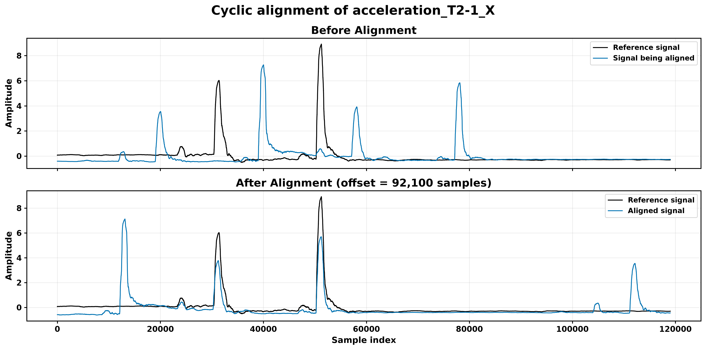
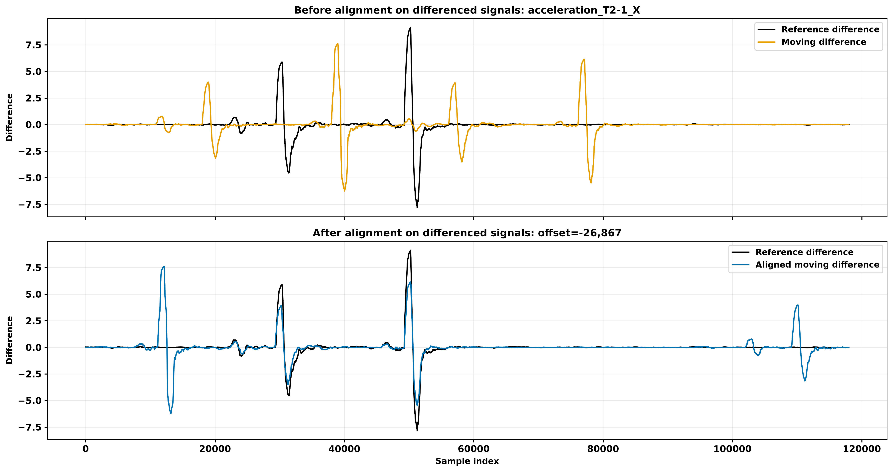

Example notebooks
The examples/ folder contains:
a method-selector notebook with a five-choice dropdown;
exhaustive cyclic two-signal alignment;
trend-corrected two-signal alignment;
FFT alignment on original signals;
FFT alignment on lag-differenced signals.
Each alignment notebook plots one selected channel before and after alignment using the same bold, colorblind-friendly manuscript style. The selected channel controls visualization only; multivariate or multimodal methods estimate their global offset using all configured channels.
Select the CSAOOD Jupyter kernel after opening a notebook.
04_fft_difference_two_signals.ipynb saves three figures under
results/04_fft_difference_two_signals: alignment of the original waveforms,
alignment of the lag-differenced waveforms, and the cyclic cost curve.
Trend-corrected example

FFT-difference example
